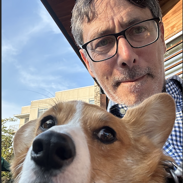
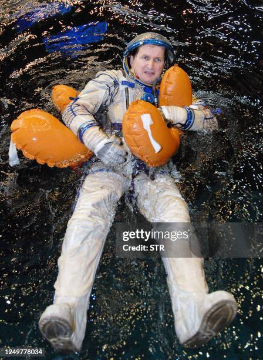

autocorrect0
AUtocrrct
auto-correct
correctauto
AUTOCORRECT
autoautoauto
In the early 90’s, Dean Hachamovitch joined Microsoft with a job in The Word Team. The idea for this word-processing tool started when Hachamovitch looked at the existing functionality that was already present in Word. Word in this case being the word processor program the company had already developed and released about a decade prior in 1983, originally called Multi-Tool Word for Xenix systems. Particularly he was building on American-Hungarian software architect Charles Simonyi’s work within the program. Word had created a dictionary that had a software extension that would let you type a specific combination of letters that would expand into text
backspace,
backspace,
 Simonyi is the only person to travel to space twice as a paying space tourist. He was the fifth space tourist overall and the second Hungarian in space.
I cyber-stalked Dean Hachamovitch...he seems to be tapped into what has come after his contribution: some linkedin activity
Hachamovitch edited this model so that when the user pressed the left arrow on the keyboard and F3 it could transform a misspelled word with its correct spelling. This later on continued to be developed so that instead of pressing those two keys it would be as simple as pressing the spacebar on the user's keyboard. This essentially made the process “automatic”. A dictionary full of “common errors” was drawn. This list is updated to this day through a statistical model using the petabytes of public words. Petabytes refers to the unit which is equal to say 500 billion pages of text or 250 million songs. This model weighs variables such as keyword proximity, phonetic similarity, linguistic context, and most popular spelling of the word.